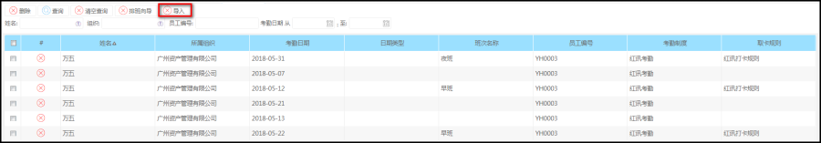
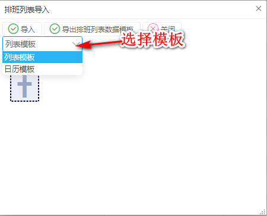
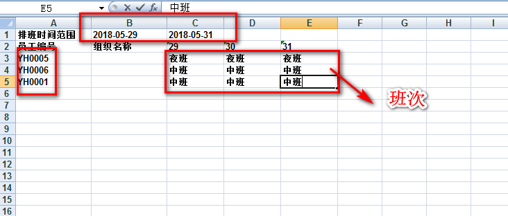

功能描述
用于查询已完成排班明细
菜单步骤
菜单路径：考勤管理---->排班管理---->排班列表
点击上方的‘导入’，使用排班向导的模板批量导入数据


选择模板后，导出排班模板，下载一个excel文件（注意：文件excel不能保存07版本以上的excel），打卡进行排班
文件的上方有一个时间范围，是排班的开始时间和结束时间
左侧是员工编号，员工编号必须是考勤档案的系统员工，不是系统员工的编号，会导入失败
班次类型必须是系统班次，完成后，点击保存
回到导入页面，选择导入模式，上传排班模板excel文件，然后点击导入
